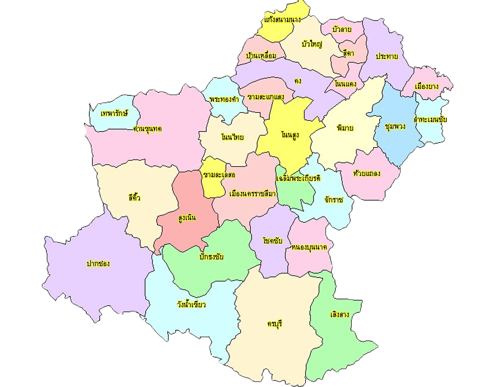

แผนที่

32 อำเภอ ตาม แผนที่ Zoning กรมสรรพสามิต ได้แก่ อำเภอเมืองนครราชสีมา, โนนสูง,
ปากช่อง, ด่านขุนทด, พิมาย, ปักธงชัย, ครบุรี, บัวใหญ่,
สูงเนิน, สีคิ้ว, โชคชัย, ห้วยแถลง, จักราช, โนนไทย, เสิงสาง, ประทาย, คง,
โนนแดง, วังน้ำเขียว, แก้งสนามนาง, ขามสะแกแสง, บ้านเหลื่อม,
เฉลิมพระเกียรติ, บัวลาย, เมืองยาง, ลำทะเมนชัย, เทพารักษ์, พระทองคำ,
สีดา, ขามทะเลสอ, หนองบุญมาก